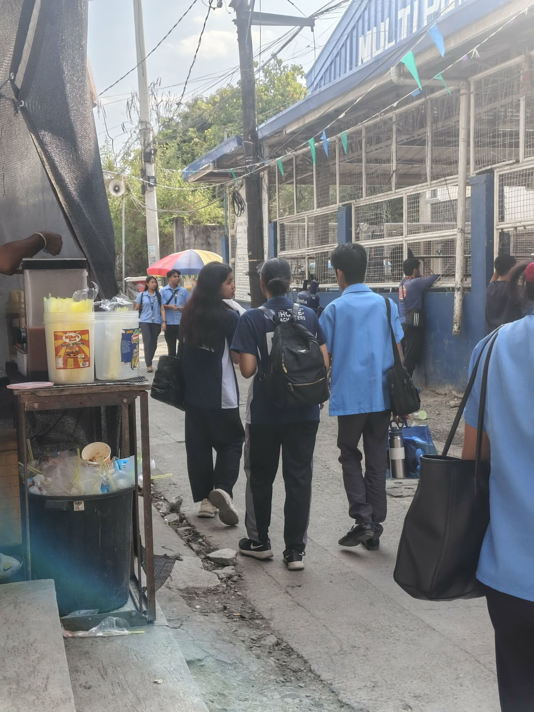
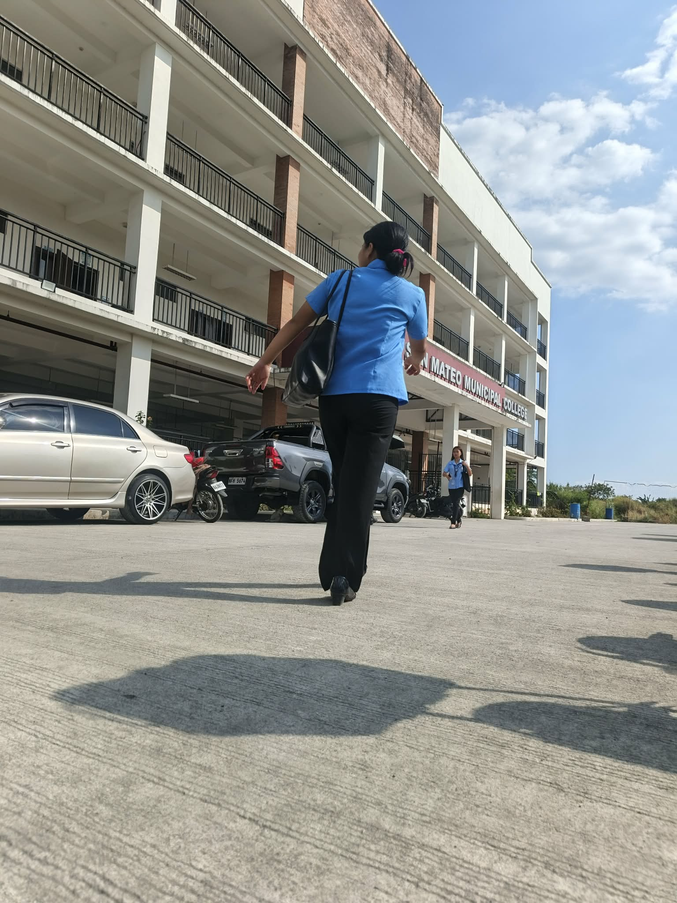

PHOTOGRAPHY

1. What story does your photo tell?
ANSWER:
My photos shows people moving together, enjoying exercise and teamwork. It tells a story about health, unity, and community spirit.2. Why did you chose this subject?
ANSWER:
I chose it because it shows energy and togetherness. It feels lively and positive.3. What elements such as lighting, composition, timing, & emotions make your photo effective?
ANSWER:
The lighting in my photo is bright and clear, making the people easy to see. The composition is balanced because the group is placed in the center. I captured them while they were moving, which adds action and life to the picture.4. What challenges did you encounter while taking the photo?
ANSWER:
I had trouble finding the right angle and waiting for the right moment when students were walking naturally.5. How can you improve your shot next time?
ANSWER:
Next time, I will adjust the camera position and take more shots to find the best angle and balance of light.
